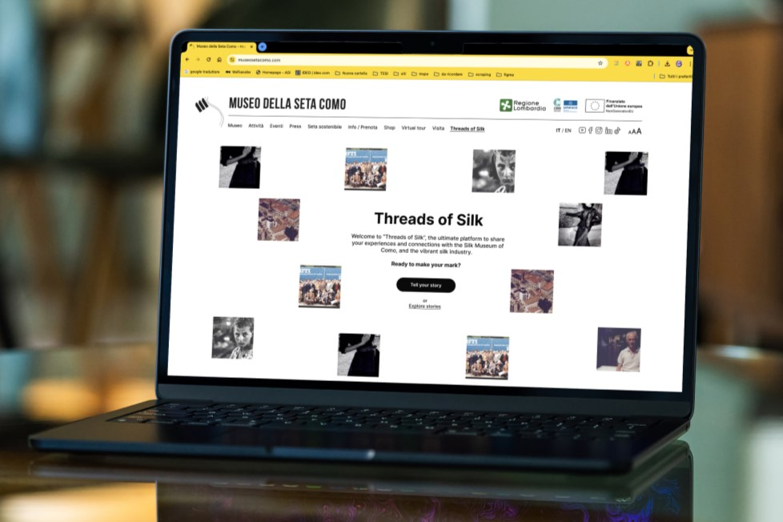

core features
Explore the stories of Como
Visitors can engage with an interactive screen to explore stories, discover related items, and uncover connections between narratives, enhancing their understanding of the museum's exhibits.

Back to top
Threads of Silk is a multi-touchpoint interactive system that connects museum visitors and the local community to meaningful stories of the Silk Museum’s heritage, allowing them to experience a deeper emotional connection to its history.
Alessandra Annoni, Jacopo Bartoli, Duru Erdem, Yaren Yavuz
UX researcher, Interaction designer, Heuristic Expert, UI developer, video-producer
Visitors can engage with an interactive screen to explore stories, discover related items, and uncover connections between narratives, enhancing their understanding of the museum's exhibits.
A new section on the museum's website allows visitors to share their own stories through various media formats, accessible via QR code from the interactive screen.
A dedicated back-end webpage for staff enables the management of submitted content, allowing them organize content, approve or modify stories and create events.


1/5 - We began with extensive research, combining desk research and museum visits to identify strengths, weaknesses, and opportunities for enhancing the visitor experience.
Discussions with museum staff revealed untapped opportunities to highlight the community heritage, which felt overshadowed by the focus on artifacts and machinery.
Our goal was to make community heritage visible and participatory, empowering individuals connected to the silk tradition to share their stories and perspectives.
We decided it would be achieved through a new system focused on collecting, preserving and sharing this type of heritage.

We defined how each scenario had distinct targets and analyzed how users would interact with various touchpoints in each context. This allowed us to tailor the experience to different needs, ensuring a seamless and intuitive interaction across all scenarios.
1/5 - We began with extensive research, combining desk research and museum visits to identify strengths, weaknesses, and opportunities for enhancing the visitor experience.
The first touchpoint focused on conveying the emotions of those who shared their stories. We designed an experience that immerses users in the heartfelt narratives of the silk community.
For the story submission website, we prioritized a streamlined process. Clear steps encouraged users to add details and multimedia, ensuring engaging, high-quality content for future museum visitors.
The back-end system was designed to minimize staff workload. Automated moderation tools and intuitive interfaces ensured efficient review and organization of user-submitted stories and media.